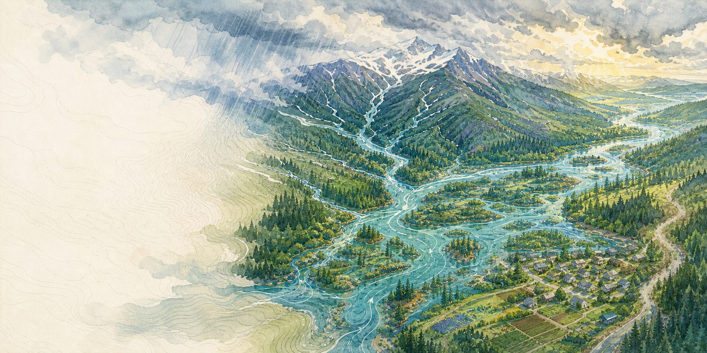
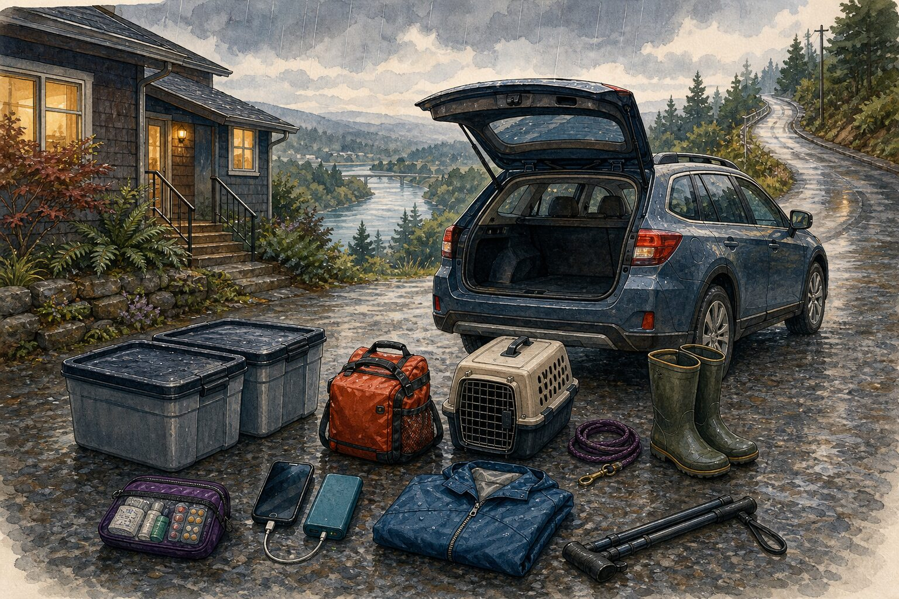
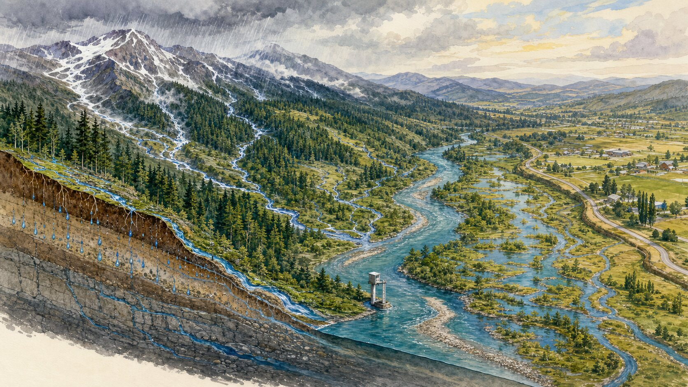

Chapter three · Flooding
Flooding
A river may rise long before floodwater reaches a home. For a household, that can mean time to leave before a familiar road is flooded or closed.
River valleys, floodplains, steep drainages, and low ground across Washington, Oregon, and British Columbia · Flooding develops at different speeds · Reviewed July 13, 2026
If water is rising or an evacuation instruction is activeImmediate reference
If water is rising now.
-
Move now
A Flash Flood Warning applies, an evacuation instruction arrives, or water rises quickly
Follow the notice. If a Flash Flood Warning includes your location and you are in a flood-prone area, move immediately to higher ground; do not wait for a route to be named. A B.C. Evacuation Order means leave immediately; U.S. local terminology varies.
-
Stop at water
A flooded route is closed
Do not walk, drive, swim, move a barricade, or try to judge the depth. Floodwater can hide a swift current, debris, electrical hazards, or a washed-out road.
For slower river flooding: read the full notice and check the forecast for the relevant local forecast point. A written household threshold can help you move earlier; it never replaces an official warning, order, or instruction. Do utility work only from a dry, safe location and only as directed by your utility or local emergency authority.
A basin remembering water
Every river valley keeps a memory of where water can go.
The memory is visible in broad flat fields, side channels, wetlands, old oxbows, raised roadbeds, and the way a town gathers on the slightly higher ground. A floodplain is not empty land waiting for a river to misbehave. It is part of the river system, occupied between events by farms, homes, schools, warehouses, roads, and ordinary life.
Water begins gathering across a basin before people notice it near a home or road. Pacific storms meet mountains. Soil becomes saturated. Snowpack can hold rain and meltwater for a time, then release that water as temperatures rise. Tributaries rise on different schedules. Culverts and storm drains carry water until they reach their limits. On steep ground or in a small drainage, water can rise dangerously much faster.
Some river floods give households hours or days to watch forecasts and use an early departure threshold. Flash floods can develop in minutes, even when the heaviest rain is falling somewhere else. A plan cannot assume there will always be that much warning.
The route as a household threshold
The road can still look ordinary when it is time to leave.
Composite household: This is not a report of one flood or family. It brings together common river-valley conditions, household constraints, and established preparedness guidance.
Asha and Eli share a rented single-story house with their friend Tomas near a rain-fed tributary west of the Cascades. The river is below the road, out of sight behind cottonwoods. Tomas works at the local library and uses a cane outdoors. Their cat travels in a carrier. The only easy route begins on a low county road, then climbs.
They began paying attention to the road after a neighbor described which culvert backs up first. That local memory was useful, but it was not enough for a plan. They subscribed to the county alert system, saved the forecast point used by local officials, and wrote down the forecast category that would tell them to move the car and leave. They chose a friend on higher ground who could receive the cat and provide an accessible room.
On a long wet night, the rain changes from background sound to something everyone is listening to. The ditch outside fills. The river forecast at their saved point reaches the category they chose. Floodwater has not reached the road, and no evacuation instruction has arrived. This is the moment the rehearsal was for.
Asha puts current medication, chargers, documents, dry clothing, and the cane in the car. The cat goes into her carrier. The waterproof bins already hold the photographs and school papers they decided mattered most. Eli calls their friend on higher ground and then the new neighbors next door—not to predict what the river will do, but to make sure they have seen the same forecast and county updates.

They leave when the river forecast at their saved point reaches the threshold they wrote down—before floodwater reaches the road. Their household threshold is a reason to leave early; it is never a reason to wait after an evacuation instruction or other official direction. It is not the right threshold for every house or every river. They chose it because Tomas and the cat need extra time, the household has one vehicle, and the first mile of the route lies on low ground.
From higher ground, they can keep reading the official notices without debating whether the road is still passable. They have not saved the house from a flood. They have given everyone a safer place to wait, with the cat, the cane, and the car still with them.
A written threshold helps a household act on a forecast before floodwater reaches the road.
Storage, release, concentration, and spread
A watershed gathers water from many sources into the same channel.
Rainwater from a street and snowmelt from a mountain basin move through the same connected system of slopes, soil, tributaries, channels, wetlands, and drains. Flooding begins before water reaches the place where people notice it.

A basin is always storing and releasing water. Mountains, soil, snow, wetlands, and reservoirs hold different amounts depending on earlier weather, whether the ground is saturated or frozen, and whether the snow is ready to melt. Tributaries and urban drains then deliver that water to larger channels on different schedules.
When a channel or drainage system can no longer carry the combined flow, water returns to floodplains, side channels, and low routes. The place where a gauge stands is only one point inside that larger movement, and every event can occupy the low ground differently.
Reading the water
Flood information is useful only when you know where it applies.
Regional terms can help you understand the situation, but a decision depends on local information: the notice for your jurisdiction, the relevant forecast point, current road information, and any evacuation instruction.
In the United States, a Flood Watch means flooding is possible; a Flood Warning means flooding is imminent or occurring; and a Flash Flood Warning calls for immediate protective action. In British Columbia, the River Forecast Centre uses High Streamflow Advisory, Flood Watch, and Flood Warning to describe increasing levels of concern about river conditions. Evacuation terms still vary by place. Follow the authority responsible for the affected area.
A U.S. “100-year flood” is more clearly described as a 1%-annual-chance flood. It is a probability, not a once-per-century appointment. Flooding can also occur outside a mapped Special Flood Hazard Area. An older map may not reflect changes to channels or drainage systems, and no map can show the full extent of every possible flood.
Before the route changes
The plan belongs to the household, not the property.
Buildings matter, but people, health, animals, transportation, and an open route out come first. Property work is useful only while it remains safe and does not consume the time needed to move.
Begin by identifying the kind of flooding that can affect your location. River flooding and flash flooding do not share one signal or timeline, and even nearby basins can respond differently. Save contact information and links for the responsible local authority, alert system, forecast point, and road source. When geography allows, choose two routes and a destination that can accommodate mobility, medication, caregiving, children, pets, service animals, or livestock.
Renters can move documents, medication, electronics, and sentimental objects higher; photograph possessions; ask the landlord how utilities and re-entry will be handled; and learn what renter’s insurance does and does not cover. Owners can ask qualified local professionals about raising equipment, backflow protection, drainage, flood openings, fuel systems, electrical work, and the limits of barriers or sandbags. Do not enter floodwater to reach a utility shutoff or other control.
Insurance and assistance differ across the border. Coverage differs among the U.S. National Flood Insurance Program (NFIP), private insurers, and Canadian overland-flood products. Waiting periods, exclusions, and temporary-housing benefits also vary. Read the actual policy before the wet season, and store the insurer, landlord, lender, and recovery contacts somewhere the household can reach even if it cannot return home.
A useful threshold can be written before the next storm. Continue with household capabilities →Or keep the flooding steps current in NowWePlan →
After a flood
Going home can take time.
Floodwater may recede while roads are still closed and a building remains unsafe. Return only when the responsible authority permits it. If the home cannot be occupied safely, finding somewhere else to stay comes first.
When the immediate work settles, write down what happened while it is still fresh. Which notice reached you? When did you leave? Which route stayed usable? What took longer than expected? Who needed help? Compare notes with neighbors, then revise the household threshold, route, contacts, and supplies. The next flood may behave differently, but the plan will begin with what you know now.
Keep this part close
Flooding quick reference.
Check the local notice, the relevant forecast point, and current information from the road authority. A generalized regional map cannot tell you whether a route or building is safe.
Water rising now
- If a Flash Flood Warning includes your location and you are in a flood-prone area, move immediately to higher ground; do not wait for a route to be named.
- A rapid rise means move to higher ground. An evacuation instruction means follow it immediately. Property work can wait.
- Never walk, drive, or swim through floodwater or bypass a barricade.
- Leave before floodwater reaches a familiar road; property work can wait.
- Operate utilities only from a dry, safe location under local guidance.
Before the wet season
- Save contact information and links for the alert system, forecast point, road source, and local authority.
- Write an earlier household threshold and identify more than one usable route when geography allows; official instructions always take precedence.
- Move documents and essential items higher; ask qualified local professionals about work that could reduce flood damage.
- Read the actual insurance policy, and keep a copy plus contact information for the insurer, landlord, and recovery services somewhere you can reach away from home.
Returning home
- Return when the responsible authority permits re-entry.
- Stay out if the structure may be unstable or there may be hazards involving electricity, gas, fuel, sewage, well water, or the septic system.
- Document damage before major cleanup when it is safe.
- Once it is safe, begin drying and cleaning under current public-health guidance.
Sources and limits
The source for your basin and road comes first.
During an event, check the alert and forecast point for your location, the responsible road authority, and any evacuation instruction from your band office, municipality, regional district, Tribe, or local emergency manager.
Reviewed July 13, 2026